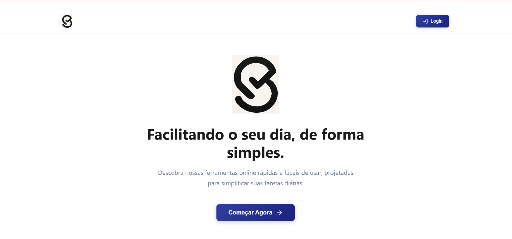
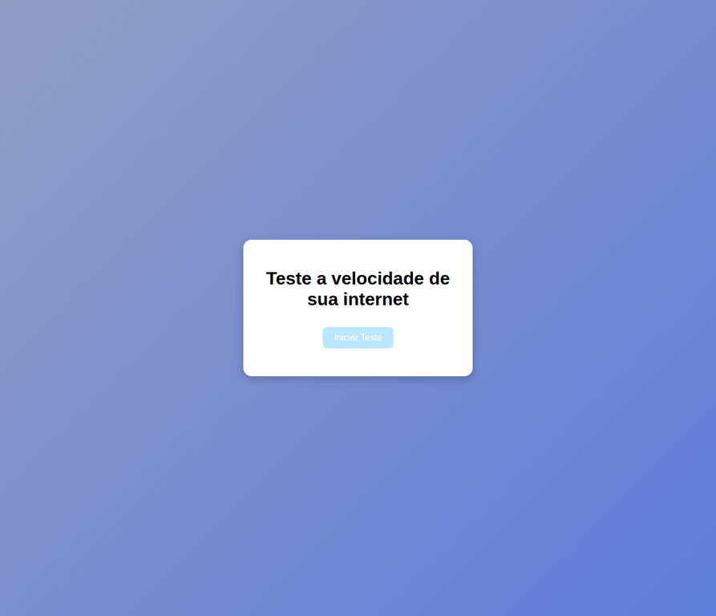

01
ENTENDEROuvir antes de construir.
Organizo o problema, o contexto e as pessoas envolvidas para descobrir o que realmente precisa ser resolvido.
DESENVOLVIMENTO & DESIGN · ITU, SP
Oi, eu sou a Eduarda. Estudo Desenvolvimento de Sistemas e transformo problemas reais em interfaces claras, produtos úteis e experiências digitais com identidade própria.

Sou estudante do 3º ano de Desenvolvimento de Sistemas e estou buscando minha primeira oportunidade profissional em tecnologia. Atuo na interseção entre código, produto e direção visual — do front-end ao design de interfaces.
Tenho conhecimentos em HTML, CSS, JavaScript, PHP, React, React Native, Firebase e SQL. Gosto de aprender fazendo: já desenvolvi projetos próprios e acadêmicos com autenticação, CRUD, banco de dados, interfaces responsivas e outras funcionalidades reais.
Uma caixa de ferramentas em expansão, feita de estudo, prática e muita curiosidade.
Não começo pelo efeito. Começo entendendo o que precisa funcionar — e só depois escolho a forma.
Organizo o problema, o contexto e as pessoas envolvidas para descobrir o que realmente precisa ser resolvido.
Transformo referências e requisitos em fluxos, hierarquia, identidade visual e uma interface que faz sentido.
Implemento, testo e refino cada detalhe para entregar uma experiência clara, responsiva e com personalidade.
Sites, aplicações e estudos visuais separados por área — com desafio, solução, papel, aprendizados e um preview de cada experiência.
 LIVE PREVIEW
LIVE PREVIEWWorkspace de estudos com tarefas, notas, Pomodoro, calculadora, cronômetro e flashcards em uma experiência retro, local e personalizável.
Criar um espaço de estudos que ajudasse a manter o foco sem parecer uma plataforma pesada ou cheia de distrações.
Desenvolvi uma landing page e um workspace com tarefas, notas, Pomodoro, calculadora, cronômetro e flashcards reunidos em um único fluxo.
Cuidei da concepção visual, estrutura da interface, organização das ferramentas e implementação da experiência responsiva.
Aprendi a transformar uma ideia ampla em uma experiência com começo, navegação clara e ações que fazem sentido para quem usa.
 SITE PREVIEW
SITE PREVIEWLanding page de uma cafeteria de Itu com narrativa de marca, cards de café e doces, carrossel, contato, mapa e apresentação do projeto.
Apresentar uma cafeteria fictícia de forma convidativa, destacando produtos, ambiente, localização e contato em uma única página.
Estruturei uma landing page com navegação por seções, cards de produtos, carrossel de imagens, formulário de contato, mapa e apresentação da integrante.
Modelei a estrutura do site, organizei a hierarquia das informações e implementei a interação entre as seções com Bootstrap e JavaScript.
Pratiquei como transformar uma identidade de marca em uma página com narrativa, pontos de contato e chamadas para ação.

APP PREVIEWAplicação React de utilidades digitais com login, dashboard, rotas protegidas, Context API, tarefas, moedas, QR Code e remoção de fundo.
Reunir pequenas ferramentas úteis em uma experiência simples, sem criar uma navegação confusa para quem só quer resolver uma tarefa.
Construí uma aplicação React com login simulado, dashboard, rotas protegidas e ferramentas como lista de tarefas, conversor de moedas, QR Code e remoção de fundo.
Trabalhei na interface, componentização, rotas, estado com Context API e organização das páginas para desktop e mobile.
Aprofundei o uso de React, aprendi a separar responsabilidades entre componentes e percebi como pequenos detalhes de fluxo impactam a usabilidade.
 TCC PREVIEW
TCC PREVIEWPlataforma colaborativa de TCC com fluxos para alunos, orientadores e coordenação: grupos, fórum, biblioteca, avaliações e progresso.
Organizar o acompanhamento de trabalhos de conclusão, aproximando alunos, orientadores e coordenadores em um mesmo ambiente.
O TCCHAT reúne login, cadastro, grupos, fórum, biblioteca, avaliações, configurações e acompanhamento de progresso por perfil de acesso.
Participei da construção da experiência visual e da organização das telas, contribuindo para uma plataforma colaborativa com fluxos diferentes para cada usuário.
Aprendi a pensar em produto para diferentes perfis, documentar fluxos e equilibrar muitas informações sem perder a clareza da navegação.

WEB PREVIEWFerramenta browser-first que interpreta downlink e tipo de conexão para explicar, em linguagem simples, o que a internet suporta no dia a dia.
Criar uma experiência pequena, clara e útil para transformar dados técnicos de conexão em uma resposta fácil de entender.
Desenvolvi uma tela objetiva com botão de ação, estado de carregamento e leitura da Network Information API para exibir tipo de conexão e downlink estimado.
Estruturei o HTML, criei a identidade visual em CSS e implementei a interação em JavaScript, incluindo a atualização quando a conexão muda.
Pratiquei como uma interface minimalista pode comunicar uma funcionalidade técnica com poucos elementos e uma resposta imediata.
Conceito mobile de 10 telas no Figma: cadastro, onboarding de cardápio, categorias de alimentos e detalhes nutricionais com favoritos.
Explorar como uma interface poderia falar sobre alimentação e bem-estar de um jeito acolhedor, claro e sem excesso de informação.
Trabalhei com uma estética leve, hierarquia tipográfica e componentes que passam sensação de organização, cuidado e confiança.
Desenvolvi o conceito visual no Figma, pensando em composição, paleta, estrutura de telas e consistência entre os elementos.
Pratiquei como decisões visuais ajudam a comunicar o posicionamento de um produto antes mesmo do usuário ler todo o conteúdo.
Estudo de interface que organiza fluxos, dashboards, perfis e estados do TCCChat antes da implementação do produto.
Dar uma direção visual para o TCCHAT e organizar as principais telas antes da implementação do produto.
O estudo considera navegação, dashboards, perfis de usuário, cards de progresso, grupos e estados importantes da plataforma.
Contribuí na criação dos fluxos e na definição de uma linguagem visual que pudesse funcionar para alunos, professores e coordenação.
Entendi melhor como o design de interface funciona como ponte entre regras de negócio, necessidades do usuário e desenvolvimento.
Nenhum projeto encontrado nesta categoria.
Se você procura alguém curiosa, cuidadosa e pronta para construir uma boa experiência do zero, vamos conversar sobre o seu próximo projeto.